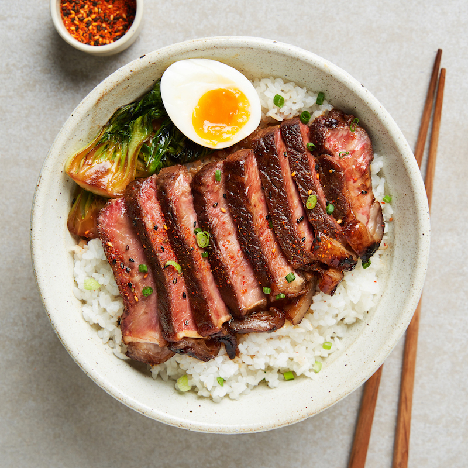

Odin Recipes

Teriyaki Steak
Sweet & savory delicious Japanese-inspired dish
Teriyaki steak is a dish that combines the rich flavor of grilled steak with the sweet and savory taste of teriyaki sauce. The dish typically consists of thinly sliced steak, usually ribeye or flank steak, marinated in a mixture of soy sauce, sake, mirin, and sugar, then grilled to perfection and glazed with a sweet and sticky teriyaki sauce.
Ingredients
- 1/3 cup mirin rice wine
- 1/3 cup sake
- 1/3 cup soy sauce
- 1 tablespoon of sugar
- 1 1/2 to 2 pounds of flank steak or skirt steak
- Olive oil or canola oil
Method
- Marinate the steak
- Boil the marinade
- Grill or fry the steak
- Let the steak rest
- Slice the steak
Other Recipes